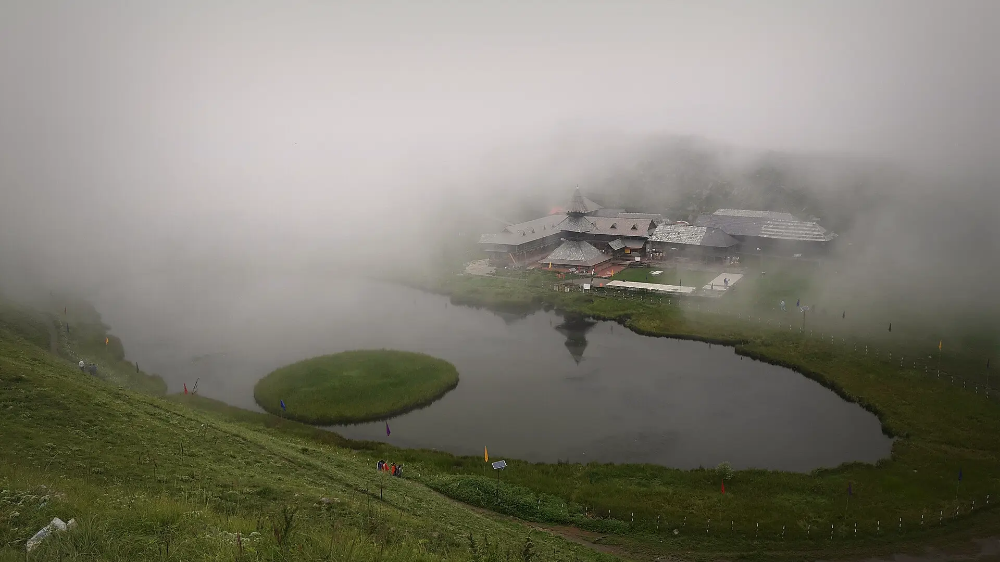

01Day 1 · Bagikm 0.1
Above Mandi
24–27kmFrom Mandi · 2–2.5 h by road
The 8 a.m. HRTC bus from Mandi reaches Bagi by about 10:30.

Photo: Casonideepika, CC BY-SA 4.0पराशर झील · Mandi, Himachal
The trek in one line, and what you can do with it.
Prashar is an easy, short trek you can do in any season.
4 stops on the map, then the climb. Scroll the stops and the map follows.
01Day 1 · Bagikm 0.1
24–27kmFrom Mandi · 2–2.5 h by road
The 8 a.m. HRTC bus from Mandi reaches Bagi by about 10:30.
01Day 1 · Prashar Lake · 2,730 mkm 7.0
~7%Island · Of the lake's surface
Prashar Lake has a round island of plants that drifts from shore to shore. Locals call it Tahla, from the Hindi for strolling.
01Day 1 · Sukhasarkm 9.0
2kmSide trip · Each way
A short walk over the meadows to Sukhasar, a small lake near Prashar.
02Day 2 · Bagikm 17.9
7kmToday · About 3 h
Back down the forest trail to Bagi.
Best in Apr–Jun, Sep–Nov.
Dark: the months the trek’s sources call its best. Mid: possible. See all treks in April.
Base prices from 4 operators’ own pages, per person. GST and travel are often extra. Treqz sells nothing.
₹2,199–6,599
The practical things, then the questions people ask.
Only BSNL and Jio, on and off at the lake. No signal on the trail. Airtel and Vi don't work. UPI may fail too.
Discover with DheerajThe only reliable water on the trail is about 15 minutes from Bagi. Fill your bottles there and carry at least 2 litres.
Discover with DheerajNo food on the trail. Eat at the small shops in Bagi. Cafés at the lake serve tea for ₹30–50 and meals for ₹80–150, with fewer open in winter.
Discover with DheerajThe temple committee keeps a basic dormitory by the lake. Ask the pandit. A donation of ₹100–200 is usual.
Discover with DheerajAn HRTC bus leaves Mandi at 8 a.m. and reaches Bagi around 10:30, for about ₹50–80. It goes on to the lake and leaves there at 1:30 p.m. A taxi to Bagi costs ₹800–1,200.
Discover with DheerajApril–June: days 15–21 °C, nights 5–10 °C. October–November: days 8–15 °C, nights 0–5 °C. December–February: nights −10 to −5 °C.
Discover with DheerajAbout 18.0 km of walking over 2 days on the trail.
The highest point is 2,730 m, about 1,010 m above the start.
Its sources grade it Easy.
Apr–Jun, Sep–Nov. It is also possible in Dec–Mar, Jul–Aug.
₹2,199 to ₹6,599 per person: base prices from 4 operators' own pages. GST and travel are often extra.
Only BSNL and Jio, on and off at the lake. No signal on the trail. Airtel and Vi don't work. UPI may fail too.